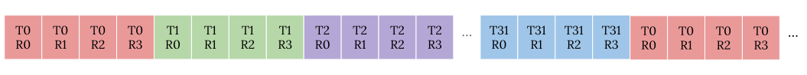
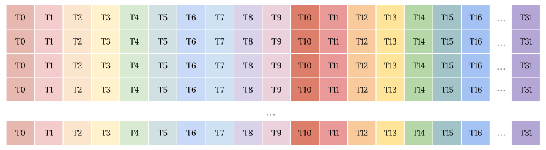
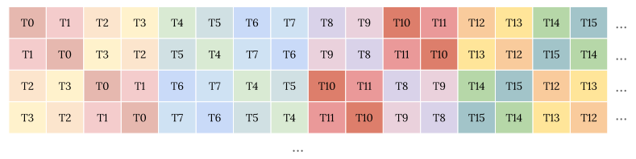

Layout is a core concept in Triton for representing and optimizing distribution mappings from source problems to the target hardware compute and memory hierarchy. In this blog post I will talk about linear layout in Triton, the new unifying mechanism over existing bespoke layouts for different purposes. The aim is to provide motivation and an intuitive understanding of linear layout; I will rely on examples and illustrations instead of theories and proofs.
[Update 2025/08/25: Now we have an official paper that explains the theory and math. Good to check it out!]
GPU characteristics and preferences
GPUs are massive parallel machines composed of nested tiles of hardware functionality blocks. We program GPUs by mapping the input problem to the corresponding software abstraction for compute and memory hierarchy. Under the persistent desire for better performance, such mapping is growingly challenging with increasingly complex GPU architecture—we need to balance different mapping needs between memory and compute hardware units, amid more special functionality blocks like tensor cores and tensor memory accelerators.
GPU compute and memory hierarchy
I will not overelaborate GPU architecture, which we can find abundant resources elsewhere; just recap the important components to align on the terminology and as background for further discussions.
A GPU consists of repeated tiles of hardware blocks1, i.e., streaming multiprocessors (SMs) or cooperative thread array (CTAs) in NVIDIA terms, and compute units (CUs) in AMD terms. Blocks are identical units; each block is a standalone unit for GPU resource allocation and execution scheduling. They are the foundation to achieve GPU’s scalability—different-sized problems can be decomposed and scheduled as the hardware scheduler sees fit.
Within a hardware block, we have multiple identical vector (NVIDIA CUDA core, AMD shader core) and matrix (NVIDIA tensor core, AMD matrix core) compute units, and on-chip memory (NVIDIA shared memory, AMD local data share (LDS)) for data exchange within the block.
In the canonical SIMT model, we program the vector compute units solely from the perspective of a single (NVIDIA) thread / (AMD) workitem, although the hardware executes a collection of them in lockstep, called a (NVIDIA) warp / (AMD) wavefront with a shared program counter2 to save chip die area.
On the other side, matrix compute units are collectively executed by the whole warp, which sorts of “breaks” the SIMT single thread perspective—input matrix fragments are kept in the registers of the whole warp in a specific manner and we cannot conceptually treat threads entirely disjointly.
| Level | NVIDIA Term | AMD Term | Operations |
|---|---|---|---|
| block | Streaming Multiprocessor (SM) / Cooperative Thread Array (CTA) | Compute Unit (CU) | |
| vector unit | warp | wavefront | subgroup reduction, matrix multiply–accumulate |
| vector lane | thread | workitem | elementwise operation |
For global memory access, consecutive threads reading consecutive elements to promote coalescing is essential for performance. It is still a descendant from the graphics era where computing for pixels on the screen fits nicely with such arrangement. Though now we are starting to see more special units on the memory side too like tensor memory accelerators. For shared memory, avoiding bank conflicts are critical to get better performance; typically we pad the allocation or do swizzling to access.
Triton programs GPUs at the block level. Overall it’s quite straightforward for developers—it’s just tiling the whole input problem once to map to blocks. We need to choose a proper block tile size, which typically can be simplified with just-in-time (JIT) compilation and autotuning. All the details in a block are not exposed to the developer. Within the block, as just discussed, we face a more demanding task that is suitable for a compiler.
Prefered memory access patterns
For global memory, we want to arrange consecutive threads to access consecutive
elements to promote coalescing and better utilize cache systems.
Also to issue less instructions, we prefer the widest 128-bit load/store
instructions on NVIDIA and AMD GPUs.
For example, for 32-bit elements and warps with 32 threads, a nice elements'
thread ownership pattern are shown as the following, where Tt means thread
#t and Rr means register #r:

#1) If we look at the above ownership pattern, from outermost to innermost,
it’s nesting levels of warps to threads to registers.
Such nesting can naturally be represented with a 3-D indexing of (w, t, r).
ID numbers at a particular level are under static upper limits, i.e., 4 for the
register level, 32 for thread level.
Given a particular (w, t, r), the owned element in global memory is simply
at index w * 32 * 4 + t * 4 + r—to put it another way, w, t, r has
a base stride value of 32 * 4, 4, 1 respectively when composing the
indexing.
Shared memory is organized into banks.
For both NVIDIA and AMD gfx9 architectures, we have 32 4-byte-sized banks,
which memory addresses are assigned to with the formula of
bank = (address / 4) % 32.
From it, successive 32-bit elements are assigned to successive banks.
If multiple threads in the same warp own elements belonging to the same bank,
access will be serialized by splitting into as many separate conflict-free
requests as necessary.
For example if we have a 16x32 32-bit element tensor that we are transposing on NVIDIA GPUs. If we read from global memory and then store to shared memory in the following thread ownership manner, each warp will utilize the full shared memory bandwidth when storing. However, if we try to use one warp to read the first two columns so that we can write to global memory with coalescing, we will see high bank conflict given they hit only two banks.

A common technique to avoid bank conflict is swizzling the element access
indices.
Based on bank = (address / 4) % 32 and look at the second row, what we can do
is to swap addresses of every pair of elements so that we swap their designated
banks.
Then for every column, the first two elements belong to different banks.
Such address swapping can be achieved by an xor operation, which flips bits.
So for the second row we xor 0b1.
Following this line of thought, for the third and fourth row we can swap with
a larger stride, involving every tuple of four elements.
First we can xor 0b10 to swap across pairs, and then we can xor 0b11 to
swap both across pairs and within pairs.
So on and so forth for other rows.
Then we still remain bank conflict free when storing into shared memory by rows,
now reading from shared memory by columns also has much less bank conflicts.

#2) Looking at the above swizzling pattern, for offset o within a 1-D shared
memory allocation, the mapped to element in 2-D shared memory tensor (x, y)
is (o / 32, o % 32) without swizzling.
With swizzling, it’s (o / 32, (o % 32) xor (o / 32)).
That is, when we increase o, for every 32, we contribute a base stride of
(1, 0) to (x, y).
We contribute a base stride of (0, 1) to (x, y) for every o % 32.
We achieve swizzling by contributing a xor x along y.
Required compute access patterns
Global and shared memory access patterns in the above are needed for better
performance.
On the compute side, we need to arrange matrix fragment elements in registers
following certain hardware requirements to compute correctly.
For NVIDIA matrix instructions, we can find detailed description about register
arrangement in the PTX ISA documentation.
For AMD CDNA/RDNA matrix instructions, we can use this tool
to print the element ownership;
For example, for AMD V_MFMA_F32_16X16X16_F16 instruction C tensor,
see the following table, where vr{t} means register #r for thread #t.
+-----------+--------+--------+--------+--------+--------+--------+--------+--------+--------+--------+--------+--------+--------+--------+--------+--------+
| C[M][N] | 0 | 1 | 2 | 3 | 4 | 5 | 6 | 7 | 8 | 9 | 10 | 11 | 12 | 13 | 14 | 15 |
+===========+========+========+========+========+========+========+========+========+========+========+========+========+========+========+========+========+
| 0 | v0{0} | v0{1} | v0{2} | v0{3} | v0{4} | v0{5} | v0{6} | v0{7} | v0{8} | v0{9} | v0{10} | v0{11} | v0{12} | v0{13} | v0{14} | v0{15} |
+-----------+--------+--------+--------+--------+--------+--------+--------+--------+--------+--------+--------+--------+--------+--------+--------+--------+
| 1 | v1{0} | v1{1} | v1{2} | v1{3} | v1{4} | v1{5} | v1{6} | v1{7} | v1{8} | v1{9} | v1{10} | v1{11} | v1{12} | v1{13} | v1{14} | v1{15} |
+-----------+--------+--------+--------+--------+--------+--------+--------+--------+--------+--------+--------+--------+--------+--------+--------+--------+
| 2 | v2{0} | v2{1} | v2{2} | v2{3} | v2{4} | v2{5} | v2{6} | v2{7} | v2{8} | v2{9} | v2{10} | v2{11} | v2{12} | v2{13} | v2{14} | v2{15} |
+-----------+--------+--------+--------+--------+--------+--------+--------+--------+--------+--------+--------+--------+--------+--------+--------+--------+
| 3 | v3{0} | v3{1} | v3{2} | v3{3} | v3{4} | v3{5} | v3{6} | v3{7} | v3{8} | v3{9} | v3{10} | v3{11} | v3{12} | v3{13} | v3{14} | v3{15} |
+-----------+--------+--------+--------+--------+--------+--------+--------+--------+--------+--------+--------+--------+--------+--------+--------+--------+
| 4 | v0{16} | v0{17} | v0{18} | v0{19} | v0{20} | v0{21} | v0{22} | v0{23} | v0{24} | v0{25} | v0{26} | v0{27} | v0{28} | v0{29} | v0{30} | v0{31} |
+-----------+--------+--------+--------+--------+--------+--------+--------+--------+--------+--------+--------+--------+--------+--------+--------+--------+
| 5 | v1{16} | v1{17} | v1{18} | v1{19} | v1{20} | v1{21} | v1{22} | v1{23} | v1{24} | v1{25} | v1{26} | v1{27} | v1{28} | v1{29} | v1{30} | v1{31} |
+-----------+--------+--------+--------+--------+--------+--------+--------+--------+--------+--------+--------+--------+--------+--------+--------+--------+
| 6 | v2{16} | v2{17} | v2{18} | v2{19} | v2{20} | v2{21} | v2{22} | v2{23} | v2{24} | v2{25} | v2{26} | v2{27} | v2{28} | v2{29} | v2{30} | v2{31} |
+-----------+--------+--------+--------+--------+--------+--------+--------+--------+--------+--------+--------+--------+--------+--------+--------+--------+
| 7 | v3{16} | v3{17} | v3{18} | v3{19} | v3{20} | v3{21} | v3{22} | v3{23} | v3{24} | v3{25} | v3{26} | v3{27} | v3{28} | v3{29} | v3{30} | v3{31} |
+-----------+--------+--------+--------+--------+--------+--------+--------+--------+--------+--------+--------+--------+--------+--------+--------+--------+
| 8 | v0{32} | v0{33} | v0{34} | v0{35} | v0{36} | v0{37} | v0{38} | v0{39} | v0{40} | v0{41} | v0{42} | v0{43} | v0{44} | v0{45} | v0{46} | v0{47} |
+-----------+--------+--------+--------+--------+--------+--------+--------+--------+--------+--------+--------+--------+--------+--------+--------+--------+
| 9 | v1{32} | v1{33} | v1{34} | v1{35} | v1{36} | v1{37} | v1{38} | v1{39} | v1{40} | v1{41} | v1{42} | v1{43} | v1{44} | v1{45} | v1{46} | v1{47} |
+-----------+--------+--------+--------+--------+--------+--------+--------+--------+--------+--------+--------+--------+--------+--------+--------+--------+
| 10 | v2{32} | v2{33} | v2{34} | v2{35} | v2{36} | v2{37} | v2{38} | v2{39} | v2{40} | v2{41} | v2{42} | v2{43} | v2{44} | v2{45} | v2{46} | v2{47} |
+-----------+--------+--------+--------+--------+--------+--------+--------+--------+--------+--------+--------+--------+--------+--------+--------+--------+
| 11 | v3{32} | v3{33} | v3{34} | v3{35} | v3{36} | v3{37} | v3{38} | v3{39} | v3{40} | v3{41} | v3{42} | v3{43} | v3{44} | v3{45} | v3{46} | v3{47} |
+-----------+--------+--------+--------+--------+--------+--------+--------+--------+--------+--------+--------+--------+--------+--------+--------+--------+
| 12 | v0{48} | v0{49} | v0{50} | v0{51} | v0{52} | v0{53} | v0{54} | v0{55} | v0{56} | v0{57} | v0{58} | v0{59} | v0{60} | v0{61} | v0{62} | v0{63} |
+-----------+--------+--------+--------+--------+--------+--------+--------+--------+--------+--------+--------+--------+--------+--------+--------+--------+
| 13 | v1{48} | v1{49} | v1{50} | v1{51} | v1{52} | v1{53} | v1{54} | v1{55} | v1{56} | v1{57} | v1{58} | v1{59} | v1{60} | v1{61} | v1{62} | v1{63} |
+-----------+--------+--------+--------+--------+--------+--------+--------+--------+--------+--------+--------+--------+--------+--------+--------+--------+
| 14 | v2{48} | v2{49} | v2{50} | v2{51} | v2{52} | v2{53} | v2{54} | v2{55} | v2{56} | v2{57} | v2{58} | v2{59} | v2{60} | v2{61} | v2{62} | v2{63} |
+-----------+--------+--------+--------+--------+--------+--------+--------+--------+--------+--------+--------+--------+--------+--------+--------+--------+
| 15 | v3{48} | v3{49} | v3{50} | v3{51} | v3{52} | v3{53} | v3{54} | v3{55} | v3{56} | v3{57} | v3{58} | v3{59} | v3{60} | v3{61} | v3{62} | v3{63} |
+-----------+--------+--------+--------+--------+--------+--------+--------+--------+--------+--------+--------+--------+--------+--------+--------+--------+
#3) The above ownership pattern follows a zigzag style.
Successive registers belonging to the same thread #t has increasing index
along the M dimension, while successive threads belonging to the same warp
#w first have increasing index along the N dimension, and then wrap around
to have increasing index along the M dimension.
A hardware location (w, t, r) owns a logical tensor element at index
(m = r + (t / 16) * 4, n = t % 16).
Triton linear layout
The previous section was to motivate the concept of layout—for GPU computation, we need to distribute and map tensor elements to the compute and memory hierarchy, so we need a mechanism to present and optimize such distribution and mapping schemes.
The mapping is not random so we don’t have an unbound problem here. The three cases in the previous section are major ones to cover; other cases are basically mutations to them. There are common patterns behind these cases—we have a correlation between an input index to an output index. When increasing the input index dimension value, some output index dimension value increases by some stride accordingly, One input index dimension can map to multiple output index dimensions, and vice versa. The end result is that we have repeating nested/swizzled indexing patterns.
Currently Triton defines separate layout mechanisms for previously mentioned
cases and uses MLIR attributes to expose to the compiler, meaning
BlockedEncodingAttr for global memory access,
SharedEncodingAttr for shared memory access,
and various vendor-specific attributes implementing
MmaEncodingTrait for matrix unit layouts,
for example, AMDMfmaEncodingAttr.
The question comes as what the system would be if we want to represent all
of them in a unified manner.
What we need
When we describe the mapping, we choose hardware location as the input dimensions and logical tensor index as the output dimensions, because there are cases where a tensor element, for example, when broadcasted, can be held by multiple hardware locations. So the reverse would mean we won’t have a proper mapping function. For exact input and output dimensionity,
A) In general, the layout system needs to be able to map from m-D to n-D to
support all cases, where the input m-D is a hardware location (warp-id, thread-id, register-id) or allocation (offset), and the output n-D is a
tensor logical index, which typically is 2-D for matrix, 3-D for batched
matrix, and even higher-D for convolution tensors.
When we have multiple dimension mapping, we can reason about each input-output dimension pair separately and then compose them naturally, as the examples in the previous section show. It’s a characteristic of n-D space in math; but as said in the beginning, this blog post is meant to provide intuitive explanations to avoid abstract theories.
One way to think about it is to fold/merge the innermost consecutive level into one element, and then the next level becomes consecutive, so on and so forth. For example #3, where we have a zigzag pattern, folding all elements along the register-M dimension, we have consecutive elements along the thread-M dimension. Such “subspace folding” demonstrates dimension pair separation.
Another way to interpret is that, when we normally map3 the n-D
logical tensor index (i, j, k, ..) to 1-D storage space,
dimensions to the left have a larger indexing base stride, and the total
indexing range represented with possible (k, ..) is within the base stride
size for j.
So j and k can be treated disjointly and then compose together.
Actually this line of thoughts applies to the same dimension—technically
two-dimensional indexing (i, j) has no strong difference than one-dimensional
(i * stride_i + j) indexing; it’s just that the first factors out and
implies an implicit stride for the i dimension, just like example #1.
B) Basically, we can describe the mapping separately for each input-output dimension pair, where the output index linearly increases by some strides when the input index linearly increases.
Now let’s take a closer look at those base stride values. Theoretically they can be arbitrary numbers; but in reality we commonly see power-of-two choices in AI use cases. It’s a reflection of the GPU hardware, on which those AI models are developed. GPUs typically4 choose power-of-two unit counts; so AI models use tensors with power-of-two dimension values to achieve better performance. One interesting fact is that if we have power-of-two values, they are naturally great to represent with the base-2 value system!
As chatted before, the output index linearly increases by some stride when the input index linearly increases. If we think about it in the base-2 value system, the position of each bit actually represents some power-of-two stride.
How do we add/compose them? That’s the xor operation we have already seen and
used in the example #2 from the previous section.
The xor operation has a truth table of 0 xor 0 = 0, 0 xor 1 = 1,
1 xor 0 = 1, and 1 xor 1 = 0—it’s “addition without carry-over”.
That is exactly what we want—linear addition only at the current
“stride range”, not affecting beyond the current “nesting level”.
C) So we can use the bits in a base-2 value system to capture the stride
values and use the xor operation to add/compose them.
How to represent
With A), B), and C) in the above, we basically derived the core concepts for linear layout, which I personally summarize as a m-D to n-D index mapping system that uses base-2 value bit positions to imply strides and xor operation to compose them. This summary tries to capture the essence so please don’t treat it as a precise definition or so, given again, this blog post is meant to provide intuitive understanding.
The formal linear layout documentation is captured as code comments, which provides a formal definition, its properties, some examples, and the math background. Please still spend time reading it carefully. With this blog post, hopefully now it becomes simpler.
The LinearLayout C++ class implementation represents the index mapping
system mostly like what we discussed before—each input dimension has
its own map entry containing a readable name and a vector of output
dimension strides.
See the following quoted code:
// bases[inDim][i] = L(0, ..., inDim=2^i, ..., 0). All other values of L are
// computed by xor'ing bases together, using the linearity rule. In addition:
//
// - Each inDim has the same set of outDims, in the same order.
// - The order of dims is minor-to-major, although this only affects reshape.
llvm::MapVector<
StringAttr /*inDim*/,
std::vector<std::vector<int32_t> /*size=getNumOutDims()*/>
/*size=getInDimSizeLog2(inDim)*/>
bases;
For bases[input-dim-name], the mapped vector, called “basis vectors”, records
how each input-dim-name bit, from least to most significant, contributes the
strides along all output dimensions.
Let’s look at the MFMA pattern in example #3.
The output is a 2-D 16x16 matrix; from minor to major, we encode it as (n, m).
- For the
"register"input dimension, we have a static upper limit of 4, which has 2 bits. Input bit0b01/0b10contributes a stride of0b1/0b10onm, nothing onn. so the 2 basis vectors are{{0, 0b1}, {0, 0b10}}. - For the
"lane"input dimension, we have a static upper limit of 64, so 6 bits. The 4 less significant bits only contribute to strides alongnfollowing an identity mapping, while the 2 more significant bits only contribute to strides alongm, nesting the strides contributed by the"register"input dimension. So we have{{0b1, 0}, {0b10, 0}, {0b100, 0}, {0b1000, 0}, {0, 0b100}, {0, 0b1000}}}.
We can find the above in the MFMA to linear layout implementation.
The same LinearLayoutConversions.cpp file also contains other layouts to
linear layout conversions so it’s quite worth a read.
Summary
Compared to bespoke layouts, linear layout unifies representations so it helps to simplify codebase and improve CodeGen performance given that we can better check whether layouts are the same and propagate accordingly. Though linear layout is an opaque and complicated mechanism in Triton. This blog post means to provide some intuitive understanding to help around. It only touches the conceptual bits and leaves how it’s used to some future posts.
-
There are higher level hierarchies to be exact. For example, in NVIDIA Hopper architecture, the top level unit is GPU processing clusters (GPCs), each containing multiple identical texture processing clusters (TPCs) inside. Streaming multiprocessors (SMs) are the unit nested inside a TPC. For AMD CNDA3 architecture, we have accelerator complex dies (XCDs) as the top level unit beyond compute units (CUs). We ignore these extra hierarchy layers for now. ↩︎
-
For NVIDIA, starting Volta, each thread has its own program counter to support independent thread scheduling. ↩︎
-
Normally we tightly map all elements. For corner cases like broadcasting, the stride value is zero. ↩︎
-
There are exceptions, for example, in each MI300 XCD chiplet, we have 40 CUs. ↩︎